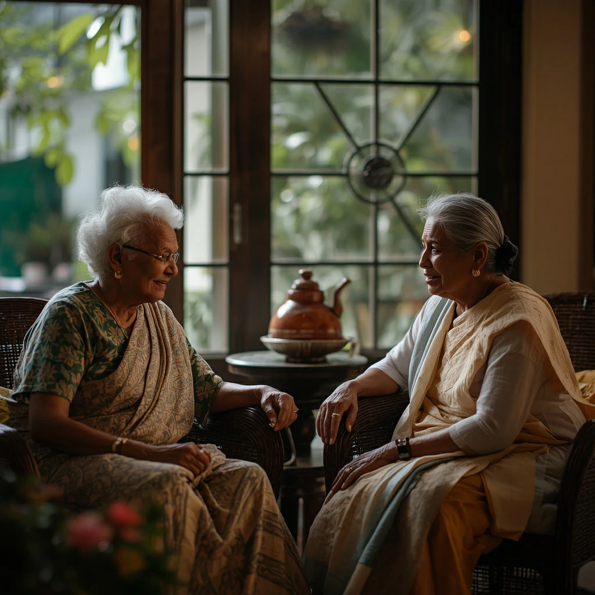

Every day is thoughtfully shaped for joy, purpose, and connection.
We believe that a fulfilling daily life is central to health and happiness at any age. Our activity programme is crafted by our specialist wellness team and adapted to individual abilities, preferences, and energy levels — so that every resident can participate and enjoy.
Participation is always by choice, never obligation. Some residents love the social energy of group events; others prefer quieter pursuits. We honour both, with warmth and without judgement.

6:30 – 7:30 AM
🌅 Sunrise Walk
A gentle walk through the gardens as the morning light arrives — birdsong, fresh air, and the best possible start to any day.
7:30 – 8:30 AM
🧘 Stretching & Meditation
Gentle chair yoga and guided breathing to ease the body into the day and cultivate inner calm and presence.
8:30 – 9:30 AM
🍳 Breakfast Together
A nourishing, freshly prepared breakfast in the dining room — a social, warm start to the morning.
10:00 – 11:30 AM
🌿 Gardening & Nature Time
Tending the garden beds, potting plants, and enjoying the sensory richness of our tropical grounds — therapeutic and joyful in equal measure.
12:00 – 1:00 PM
🍛 Lunch & Rest
A nourishing midday meal, followed by a quiet afternoon rest period for those who wish it.
2:30 – 4:00 PM
📚 Reading & Creative Pursuits
Library time, book club discussions, art, craft, and puzzles — stimulating the mind in a calm, social setting.
4:00 – 5:00 PM
🎵 Music Sessions
Live music, group singing, and music therapy — proven to lift mood, stimulate memory, and bring genuine happiness.
4:30 – 5:30 PM
☕ Tea Time
A beloved Sri Lankan tradition — afternoon tea with fresh pastries, good conversation, and unhurried warmth on the veranda.
7:00 – 9:00 PM
🌙 Evening Relaxation
Dinner, soft music, family visits, gentle television, or personal time — a peaceful close to a full, meaningful day.
Sessions led by a qualified music therapist, using rhythm and melody to support emotional wellbeing, memory, and communication.
Therapeutic gardening with our resident horticulturist — planting, nurturing, and harvesting in our productive kitchen garden.
Gentle physiotherapy-led group exercise, chair aerobics, and walking clubs adapted to every level of ability.
Painting, watercolours, origami, and seasonal craft projects that encourage creativity and spark pride in making something beautiful.
Monthly birthday celebrations, cultural festivals, family days, and themed events that bring the whole community together.
Weekly cinema afternoons with classic films, documentaries, and favourite Sinhala and Tamil films enjoyed together.
The best way to understand life at Sunset Garden is to come and experience it. We'd love to show you around.
Schedule a Visit